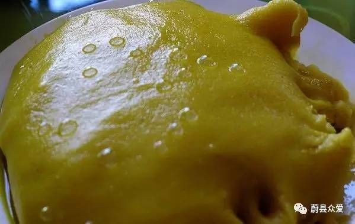
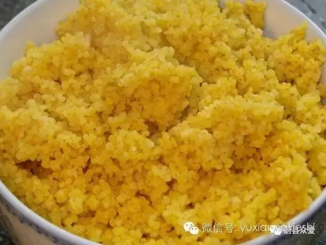
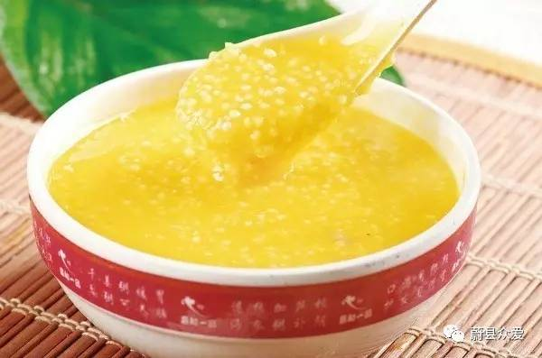
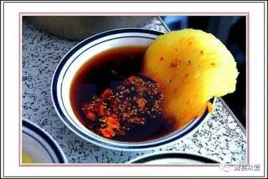
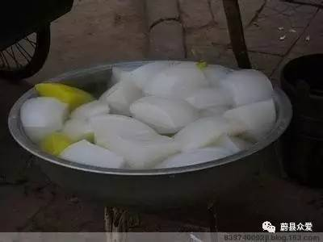
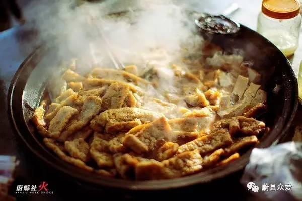
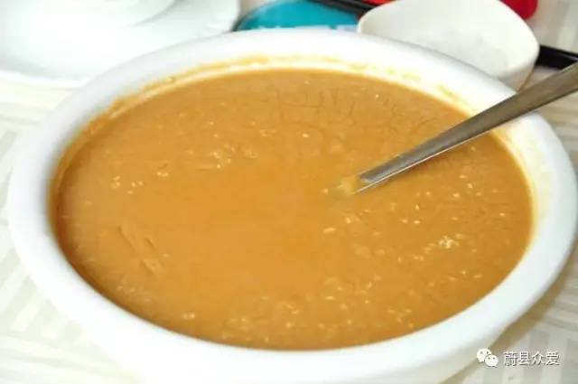
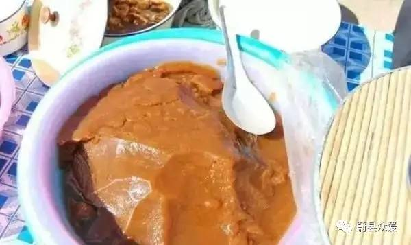
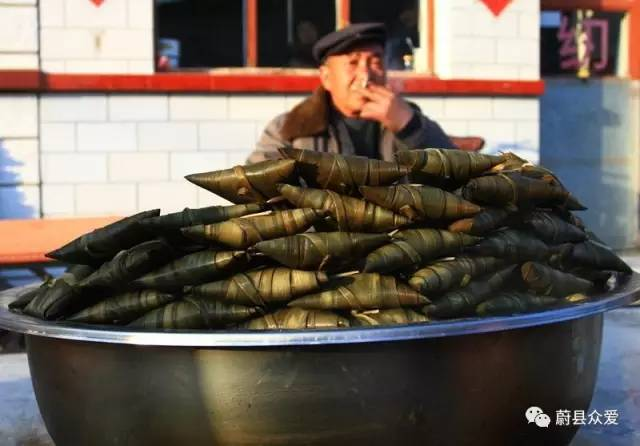

蔚县美食小吃-黄糕










是用黍子去皮俗称黄米，磨成面粉为主要原料（可选择性的掺杂少许玉米面或小米面或不掺），用水拌成粉团状（软硬视个人及家庭成员口味而定）在锅里蒸制而成，然后用手（可蘸少许凉水）揉成块儿状！最后可在糕块儿上面涂少许食用油！这样就是面性黄糕。
我们吃习惯了、外地吃不了、说划喉咙。。
由于采用蔚县当地水土种植、特别好吃、外地人很多都是常年购买。
蔚县美食小吃-油炸糕
黄糕熟了后、切成合适小块、包上红糖。放在油锅里炸、炸到金黄色即可。摆盘、撒少许白糖。
蔚县美食小吃-“贡米”小米
小米粥也是蔚县的一种主食，粒大色黄，营养价值高，富含多种维生素，蛋白质，粗纤维，和人体必需的色氨酸等，熬成稀粥，香气扑鼻，易于消化。
蔚县美食小吃-暖泉粉坨
热料先放在碗里，冷却后倒出来，一个个倒扣碗的形状。黄粉饦主料是豌豆面，白份饦主料是绿豆面，灰白色粉饦主料是荞面.吃时用刀子划成细条，拌上芥末、醋、盐、辣椒。辣椒油特别好吃
辣椒油特制的。味道特别，都是秘方。
蔚县美食小吃-“周记”粽子
味独特道鲜美。
蔚县美食小吃-豆腐干
特殊水土、按传统卤水点豆腐制作。
五香豆腐干是风靡蔚县的豆制品。做法是把豆腐切成细条或长方小块，经日光暴晒，反复翻晾，除其浆味后，用温水洗净入锅卤煮，放适当食盐、花椒、大料、茴香、桂皮等调料，需慢火长时间，使调料味浸润于内，故称“五香豆腐干”。
五香豆腐干有软有硬，软的瓷实，硬的筋道。咬着呼越嚼越香，拌着吃味美可口，既可做下酒菜，又可做伴茶品，且老少皆宜。蔚县人赴外地控亲访友，大都带些五香豆腐干作为馈赠礼品。而外地人来蔚县做客，临走时必带这物中也少不了五香豆腐干
蔚县美食小吃-熏豆腐干
真的是熏出来的。用来炒菜好吃。
蔚县美食小吃-腐豆腐干
用鸡肉汤做底料。熬一定时间、锅里有豆腐干 硬的、软的、豆腐皮、这个底料应该也有老底吧。
蔚县美食小吃-湖湖面
特殊水土、传统制作工艺。美味啊。
糊糊面是蔚县传统小吃，用豌豆磨制而成，做的时候锅中加水，慢慢将糊糊面到人锅中，边倒边用勺子搅动，开锅以后就能食用，香气袭人，喝上一口，满嘴的豌豆香。